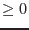
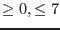

| Parameter | Mand | Type | Default | Constraints |
| ineventset | yes | dataset | ' ' | none |
name of input events file
|
| newoutput | no | boolean | no | yes/no |
Create output events file (no for overwriting input)
|
| outeventset | no | dataset | 'events.out' | none |
name of output events file. If this parameter is set, then
newoutput=Y is automatic
|
| flagevents | no | boolean | yes | yes/no |
activate EVFLAG
|
| correctcti | no | boolean | yes | yes/no |
activate CTI_CORR
|
| getccdbkg | no | boolean | yes | yes/no |
activate CCDBKG
|
| minenergy | no | integer | 100 |  |
Minimum PHA energy (in ADU) for CCDBKG
|
| maxperipix | no | integer | |  |
Maximum PERIPIX for CCDBKG
|
| fillccdbkg | no | boolean | yes | yes/no |
Fill the empty areas of CCD background map
|
| useccfdarkframe | no | boolean | no | yes/no |
Use dark frame in CCF
|
| fillminnumber | no | integer | 10 | |
Number of events below which filling is applied
|
| maskedccdset | no | dataset | ' ' | none |
name of CCD masked image file from emdiag (for CCD background)
|
| rejectbade3e4 | no | boolean | yes | yes/no |
Reject events with bad E3/E4
|
| makepha | no | boolean | yes | yes/no |
activate MAKE_E
|
| randomizeenergy | no | boolean | yes | yes/no |
randomize PHA over 1 ADU
|
| correctgain | no | boolean | yes | yes/no |
activate ENERGY
|
| writebackgroundset | no | boolean | no | yes/no |
Create output file for optical background image and time series
|
| backgroundset | no | dataset | 'bkgccd.map' | none |
name of output file for optical background image and time series
|
| timebin | no | real | 100 |  0 0 |
time bin for E4 time-series
|
| ontimepha | no | boolean | no | yes/no |
activate spectral redistribution (only timing and compressed timing)
|
| Parameter | Mand | Type | Default | Constraints |